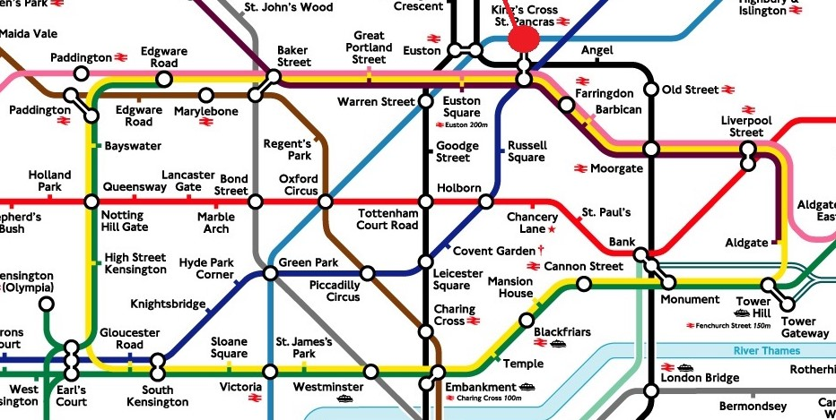

Bezichtigen kan altijd, 24 uur per dag zeven dagen in de week. De rondleidingen in de toren zijn echter al snel vol geboekt, je moet een Britse staatsburger zijn en je moet het zes maanden van tevoren boeken.
Aangezien we niet naar binnen mogen, is de activiteit en de wandeling rond de Big Ben helemaal gratis. Let wel: tijdens het wandelen kunnen de schoenen verslijten, de kosten hiervan worden niet vergoed.
De Big Ben bevindt zich op het volgende adres: Parliament Square, Westminster, St Margaret Street, London SW1A 0AA
De Big Ben bevindt zich vlakbij de halte Westminster. We nemen dus de gele lijn, ofwel de Circle line, vanaf King’s Cross naar Westminster.
De Big Ben is het icoon van Londen en je moet er naartoe wanneer je in Londen bent. De toren zelf heet de Elizabeth Tower, eerst heette deze St. Stephen’s Tower. De Big Ben is een hele grote klok en luid ieder uur. Voor de liefhebber zijn er ook klokken die elk kwartier luiden. De toren maakt deel uit van het parlementhuis.
Tel alle ramen van de Elizabeth Tower.